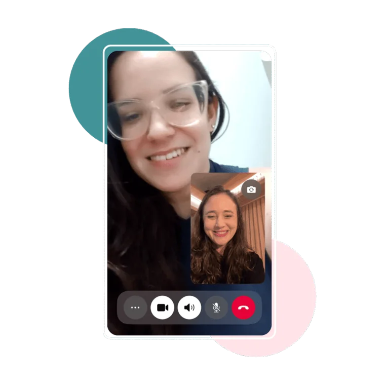

COMO FUNCIONA A CONSULTA
Durante nossa videochamada, vou te guiar passo a passo. Antes do encontro, vou te pedir algumas informações sobre você, seu bebê e a amamentação, essa pré-avaliação me ajuda a entender melhor o que está acontecendo.
Na consulta, vou te ouvir com atenção, acolher suas dúvidas e te orientar com clareza sobre os ajustes que precisa fazer. Meu objetivo é que você saia da consulta com o problema resolvido e a confiança de que consegue seguir.
O QUE ESTÁ INCLUSO
 1 hora de consulta por videochamada comigo
1 hora de consulta por videochamada comigo- Avaliação detalhada do seu caso
- Orientações práticas e personalizadas para o seu caso
 + 30 dias de acompanhamento no whatsapp com minha equipe
+ 30 dias de acompanhamento no whatsapp com minha equipe Ebook Alta Produção
Ebook Alta Produção Ebook Entre Sonecas
Ebook Entre Sonecas